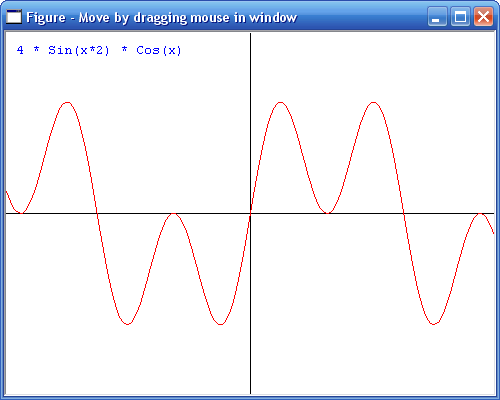

Graph demo Ibasic Professional
Description
This graph demo shows how to draw graphs using low level Windows API functions like MoveToEx, LineTo, TextOut. This results in very fast rendering. To prevent the graph from flickering when redrawing, the graph is drawn in a bitmap in memory, and when ready it is copyied using BitBlt.
The demo is written in the programming language Ibasic Professional.
Click here to view sourcecode online
Click here to download the sourcecode and executable (zip file)

Author
This program is created by Jos de Jong, December 2006.